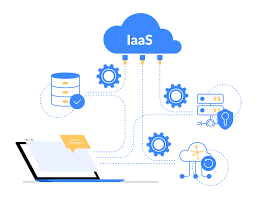
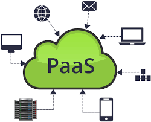
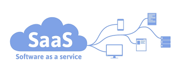

IaaS
 Cuando nos referimos a IaaS, estamos hablando de infraestructuras como servicio. Las empresas contratan la infraestructura de hardware a un tercero a cambio de una cuota o alquiler. La contratación de este hardware permite elegir la capacidad de proceso (procesadores), la memoria a utilizar (memoria RAM) y el espacio de almacenamiento (disco duro).
PaaS
 El servicio PaaS ofrece plataformas como servicios. En estas plataformas se pueden lanzar aplicaciones como bases de datos, middleware, herramientas de desarrollo, servicios de inteligencia empresarial, etc. Este tipo de servicios es el ideal para los desarrolladores que sólo quieran centrarse en la implementación y administración de sus aplicaciones. Al no tener que preocuparse por los recursos de hardware y software (sistemas operativo), mejoran su eficacia, centrándose sólo en la parte que les interesa.
SaaS
 Este modelo de software como infraestructura, aloja el software de la empresa, así como sus datos, en servidores externos a la misma, y paga una cuota por su utilización. Cualquier empleado de una empresa podrá acceder desde cualquier lugara las aplicaciones de la empresa sin necesidad de instalarlas en un equipo local. Cuando hablamos de software en la nube estamos hablando de SaaS. Con un SaaS la preocupación de la empresa será sólo cómo utilizar los programas de software necesarios para su funcionamiento, olvidándose del resto de recursos. El hardware requerido, sistemas operativos, aplicaciones, etc. son provistas por el proveedor del servicio que, además, se encarga de mantenerlas funcionando correctamente y actualizadas.